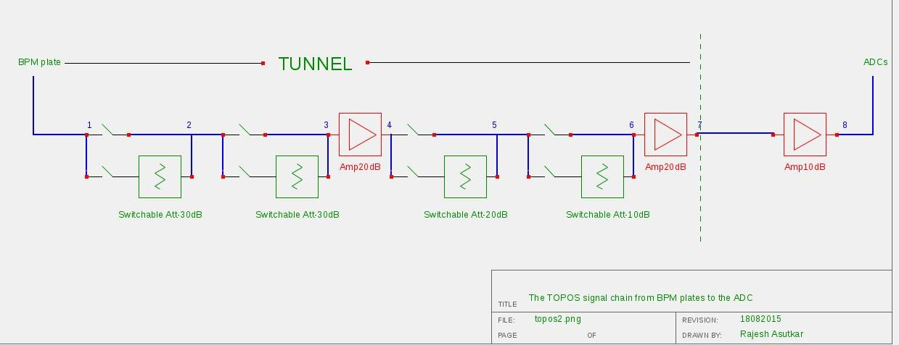
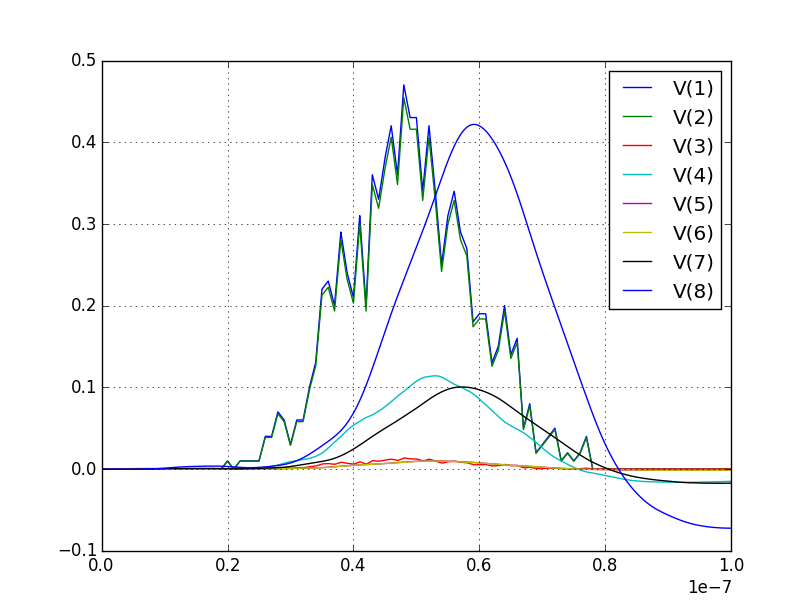
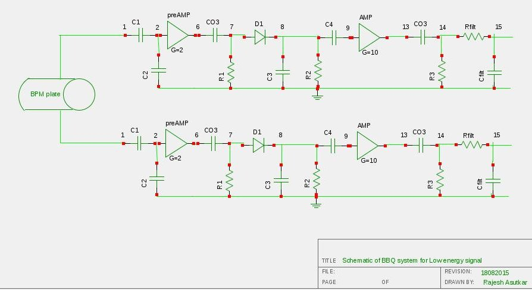
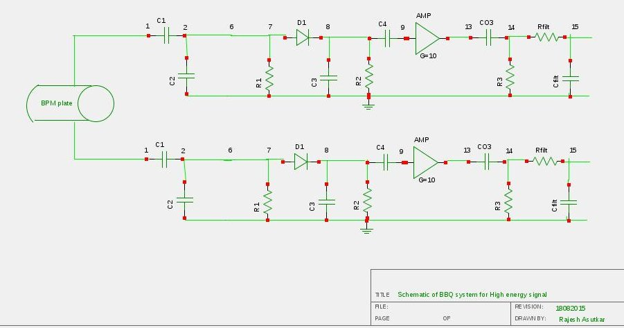
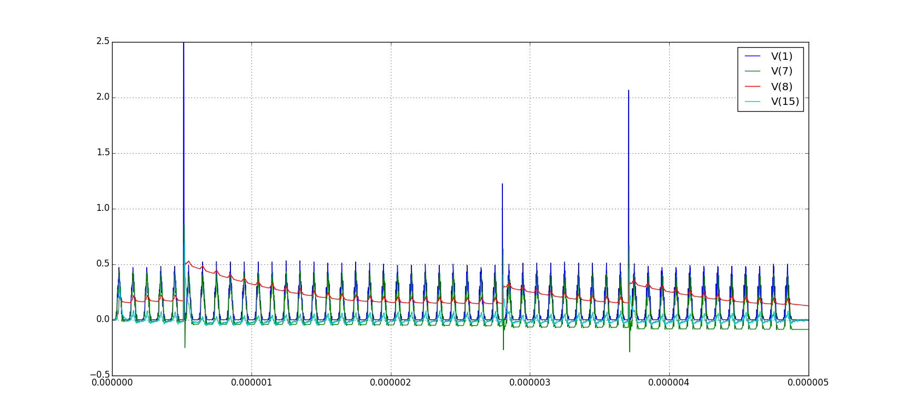
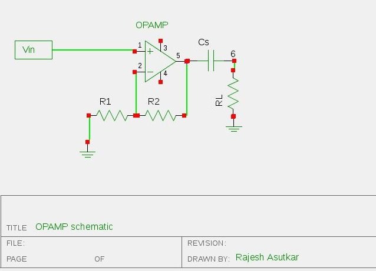
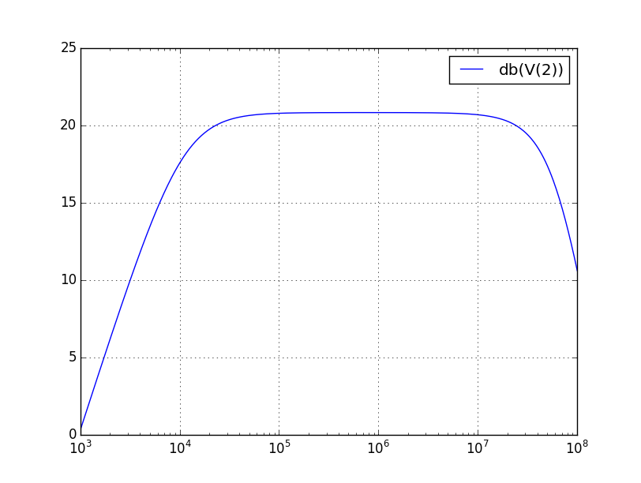
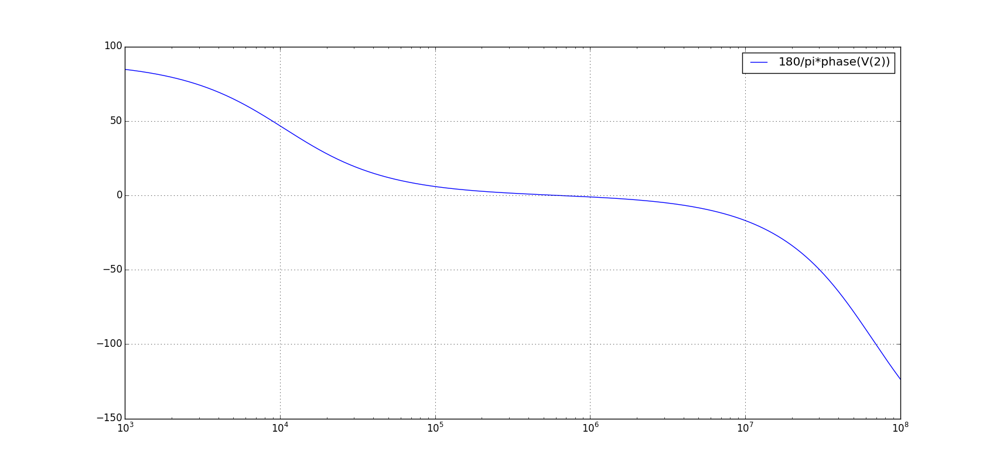

9. Tune, Orbit and POSition measurement system (TOPOS)¶
9.1. Components of TOPOS¶
9.1.1. TOPOS SIGNAL CHAIN from BPM plates to ADC¶
The TOPOS signal chain from BPM plates to the ADCs. It is divided into three distinct stages. Each stage consists of switchable attenuators and amplifiers.
And here is the result after simulation of the above circuit:
Code for the above circuit in Ngspice looks like this:
.include att10.cir
.include att20.cir
.include att30.cir
.include amp10.cir
.include amp20.cir
.model switch1 sw
Vin 1 0 ac sin(0 100m 10meg)
// Vsw1=5 and vsaw1=-5 for Off 1
Vsw1 sn1 0 DC 5
swa1 1 2 sn1 0 switch1 OFF
Vswa1 sna1 0 DC -5
Xatt35 img1 2 att30
swaimg2 1 img1 sna1 0 switch1 OFF
// switchable attenuator of -30db
Vsw2 sn2 0 DC -5
swa2 2 3 sn2 0 switch1 OFF
Vswa2 sna2 0 DC 5
Xatt31 img2 3 att30
swaimg3 2 img2 sna2 0 switch1 OFF
// head ampliflier of 20db
rser1 3 0 1meg
Xamp20 3 4 amp20
// switchable attenuator of -20db
Vsw4 sn4 0 DC -5
swa4 4 5 sn4 0 switch1 OFF
Vswa4 sna4 0 DC 5
Xatt20 img4 5 att20
swaimg5 4 img4 sna4 0 switch1 OFF
// switchable attenuator of -10db
Vsw3 sn3 0 DC 5
swa3 5 6 sn3 0 switch1 OFF
Vswa3 sna3 0 DC -5
Xatt10 img3 6 att10
swaimg6 5 img3 sna3 0 switch1 OFF
// drive amplifier of 20db
Xamp21 6 7 amp20
rser2 6 0 75
// post amplifier
Xamp10 7 8 amp10
rser3 7 0 75
.CONTROL
AC DEC 5 100k 1000MEG
tran 1ns 1us
plot V(1) v(2) v(3) v(4) v(5) v(6) v(7) v(8)
.include plotng.txt
The exctra files which are include in above code can found here:
9.1.2. BaseBand tune(Q) measurement system (BBQ)¶
Simple Schemaic of BBQ system configuration at SIS-18 for low energy signal is shown in below circuit:
Simple Schemaic of BBQ system configuration at SIS-18 for high energy signal is shown in below circuit:
And here is the result after simulation of the above circuit:
Ngspice code for one BPM plate is given here:
.SUBCKT THS3001 1 nois 3 4 5
VNoiw nois 2 dc 0 TRNOISE (1m 1n 0 0 )
.MODEL Rt RES TC1=-0.006
.include lt1192.cir
//BPM simulation program for NGspice
C1 1 2 50PF
C2 2 0 50PF
XOP1 2 3 4 5 6 LT1192
RO1 3 0 100
RO2 3 6 100
CO1 6 7 15nF
ri1 2 0 1meg
rl 7 0 1meg
VCC1 4 0 DC 15V
VEE1 5 0 DC -15V
D1 7 8 germ
C3 8 0 1nF
R2 8 0 1k
C4 8 9 1pf
XOP2 9 10 11 12 13 THS3001
RO3 10 0 10
RO4 10 13 100
C03 13 14 1pf
ri2 9 0 1meg
R3 14 0 10k
VCC2 11 0 DC 15v
VEE2 12 0 DC -15v
rfilt 14 15 160
cfilt 15 0 1pf
AVSRC %V([1]) filesrc
.model filesrc filesource (file=”current_profile2.txt” )
.CONTROL
//AC DEC 1k 500MEG //PLOT mag(V(2,7)) xlog
TRAN 1NS 5uS
plot v(1) V(7) v(8) v(15)
plot v(7) v(8)
.include plotng.txt
9.1.3. Simple OPAMP schematic¶
Here is the simple schematic of OPAMP:
And here is the code for simulation of above circuit using LT1192:
Amplifier of 20db
Here you can the results after simulation:
Magnitude response at the oputput
Phase response at the oputput
9.2. Using TOPOS for four plates¶
Following Ngspice code can calculate the output of Topos chain for 20db(fixed) gain
TOPOS SIGNAL CHAIN –> Simulation for 4 plates
9.3. Using BBQ without preamplifier for two plates¶
Following Ngspice code can simualate the output for 2 plates for BBQ system without preampliflier
- BBQ Circuit
.include lt1192.cir
*peak detector–>select Tau changing R2 and C3
*Amplifier–> change gain by changing RO3 and RO4
*2nd bbq plate
*filter 2nd order
9.4. Using BBQ with preamplifier for two plates¶
- BBQ Circuit
.include lt1192.cir
*Amplifier–> change gain by changing RO3 and RO4
*Filter 2nd order–>
*2nd Bbq Plate
*filter 2nd order